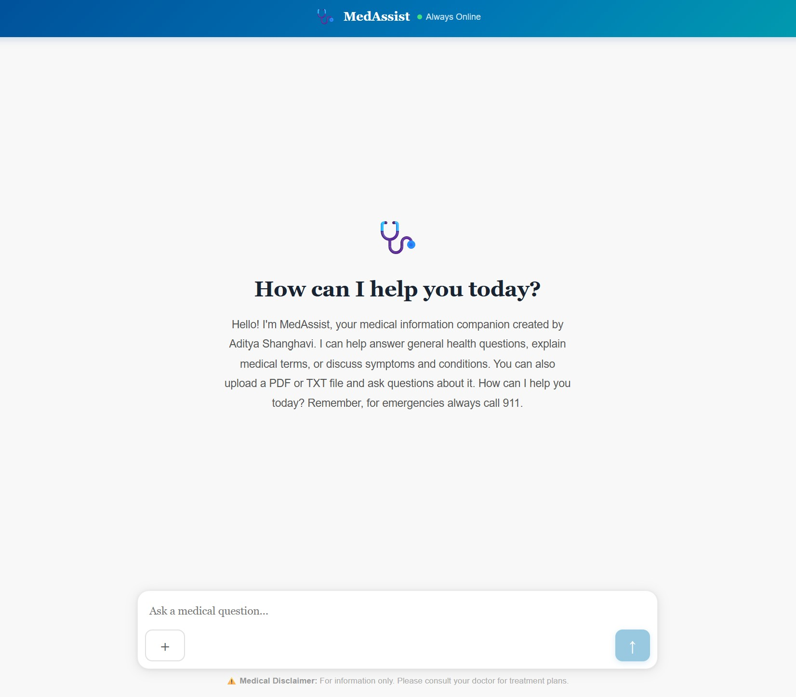

MedAssist
Personal Project
A full-stack, domain-constrained AI medical assistant that integrates the Claude API with a retrieval-augmented generation pipeline to produce evidence-grounded responses backed by PubMed literature.

System
Full-stack AI medical assistant
Domain-constrained to reduce hallucination risk
Evidence source
PubMed literature
RAG pipeline retrieves peer-reviewed research to ground each response
Model
Claude API + RAG
Citations surfaced alongside every generated answer
The problem
General-purpose LLMs hallucinate medical information at unsafe rates
Responses lack citations, making them unverifiable in clinical contexts
Accessing relevant biomedical literature is slow and requires expertise
Approach
Constrain generation to domain-relevant PubMed sources
Retrieve supporting literature before generating a response
Surface citations so users can verify claims directly
Technical build
Claude API for natural language generation and reasoning
Vector search over an indexed PubMed corpus
Full-stack web application deployed on Vercel
Why it matters
Demonstrates responsible AI design in a high-stakes domain
Makes peer-reviewed medical knowledge more accessible
Reduces hallucination risk through retrieval grounding
Technology stack
Try it
Live at medassist-as.vercel.app